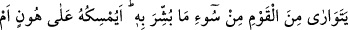
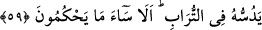

yorumlamışlardır.
59. Kendisine verilen müjdenin kötülüğünden dolayı kavminden gizlenir. Onu,
aşağılık duygusu içinde yanında mı tutsun, yoksa toprağa mı gömsün! Bakın ki,
verdikleri hüküm ne kadar kötüdür!
“Kendisine verilen müjdenin kötülüğünden dolayı” müjdesi verilenin kötü oluşu ve
insanların onu ayıplaması sebebiyle “kavminden” kendisini tanıyanlardan ve
akrabasından “gizlenir.” Verilen müjde hakkında “__WORD__” ism-i mevsûlünün kullanılması,
onların kız çocuğunu akıllılar derecesinden çıkardıkları içindir.
“Onu, aşağılık duygusu içinde” onu çalıştırmak, su taşıtmak, hizmet ettirmek için
zillet ve düşüklük duygusu içinde ya da kendisi hor ve zillete katlanarak kendi rızâsıyla
onu “yanında mı tutsun,” “yoksa toprağa mı gömsün!” Yâni Temimoğulları ve
Mudaroğulları kabilelerinin yaptığı gibi diri diri toprağı mı gömsün! O çocuk hakkında
kararsız haldedir. Kendi kendine ‘Bu çocuk kalsa mı, toprağı mı gömsem?!” der durur.
Bazılarının öfkesi o kadar aşırı olurdu ki, kadının kız çocuğu doğurduğu evi terk ederdi.
“Bakın ki,” müşriklerin “verdikleri hüküm ne kadar kötüdür!” Yâni kendi
nazarlarında değeri ve hürmeti olmayan kızları Allah’a nisbet ediyor ve erkek
çocuklarını kendileri için tercih ediyorlar. Hatalarının kaynağı, kendileri yüz
çevirdikleri halde kızları Allah’a nisbet etmeleridir.